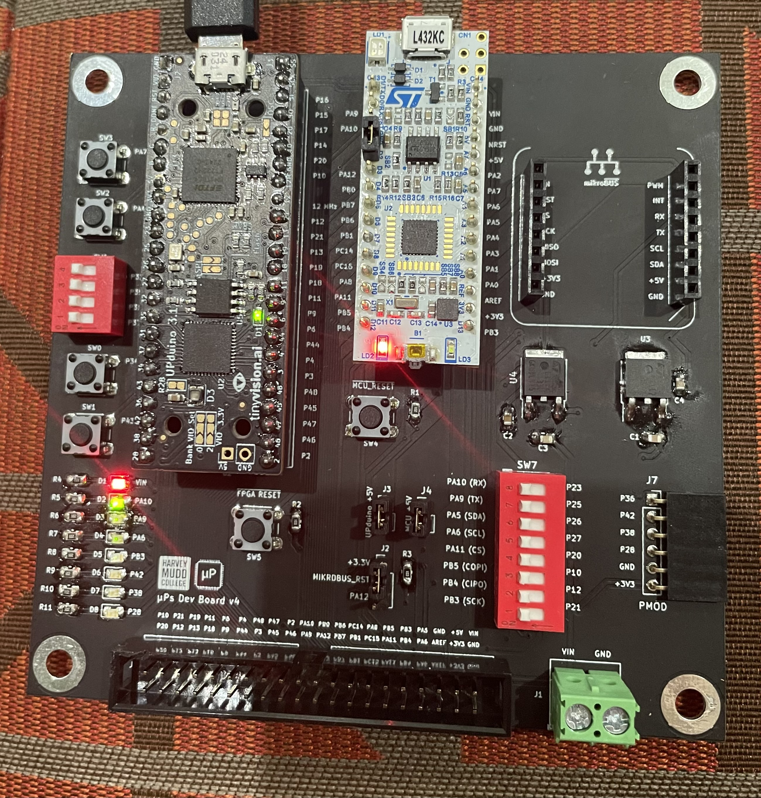
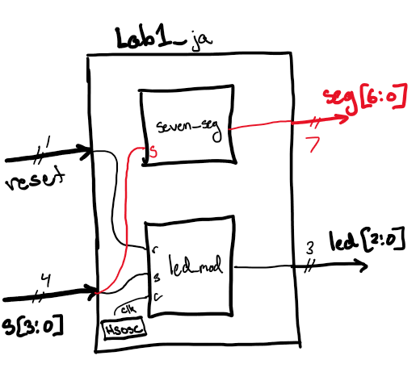
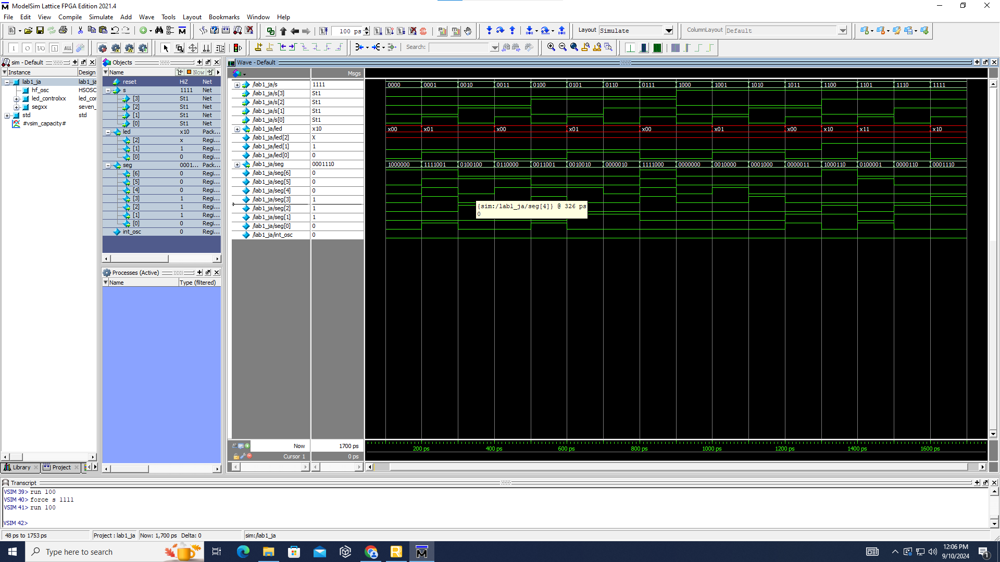
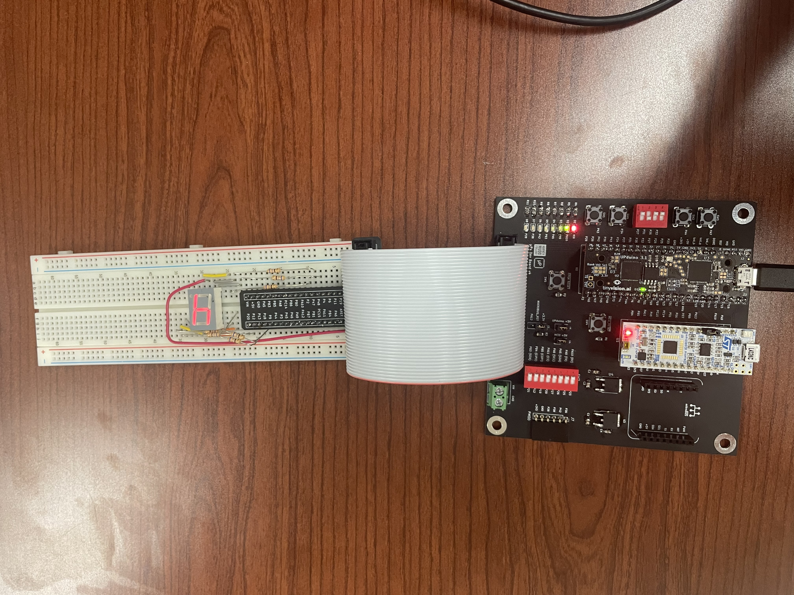
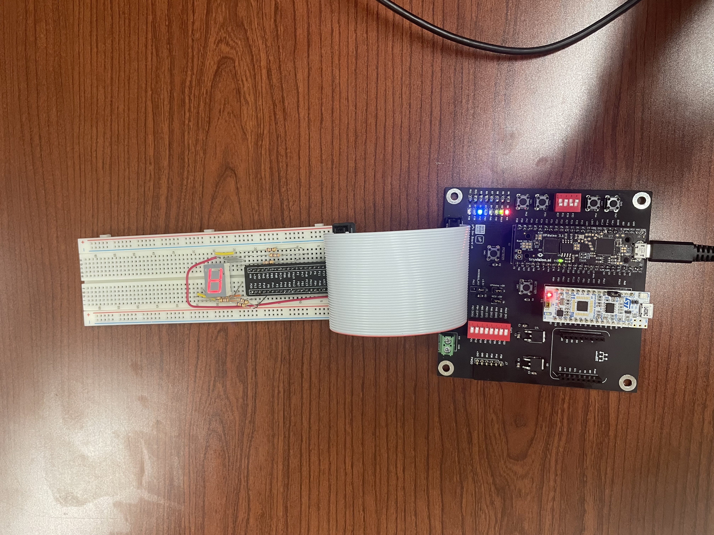

E155 Lab 1: FPGA and MCU Setup and Testing
Lab Overview
In this lab, the goal was to set up and test our development board, FPGA, and MCU, as described in the Lab 1 Instructions. In addition to running these tests, we were tasked with creating our own program to run on the FPGA that would light up a seven-segment LED display. This display would be able to show the single-digit hexadecimal digits 0-f and it would be controlled by 4 DIP switches mounted on the development board.
Assembling and Testing the Development Board
To assemble the development board, we needed to solder on both surface mounted and through hole components, including regulators, LEDs, resistors, DIP switches, and more. Once assembled, I powered the board using the USB connection as seen in the image below.
 Figure 1: Assembled development board while powered by the USB connection.
After assembling the board, I was able to successfully test it using the given files. At first, getting the tests to be successful proved difficult, however this was due to a few not-fully-soldered pins. Once I fixed this, the tests ran successfully.
LED Control and Seven-Segment Display Task
After testing the board, it was time to move into creating the LED control and seven-segment display. To do this, I followed the given truth table for the LED control:
| S1 | S0 | led[0] |
|---|---|---|
| 0 | 0 | OFF |
| 0 | 1 | ON |
| 1 | 0 | ON |
| 1 | 1 | OFF |
| S3 | S2 | led[1] |
|---|---|---|
| 0 | 0 | OFF |
| 0 | 1 | OFF |
| 1 | 0 | OFF |
| 1 | 1 | ON |
| led[2] |
|---|
| Blink at 2.4 Hz |
From this table, it can be noted that led[0] is simply driven by an XOR gate between S1 and S0 and led[1] is simply an AND gate between S3 and S2. In addition, the s[3:0] input was driven to the seven-segment display, where the input s[3:0] as a hexadecimal number corresponded to the number displayed on the seven-segment display by turning on/off seg[6:0]. For example, 0100 is 4 in hexadecimal, so the segments that light up (BCFG, or seg1, seg2, seg5, and seg6) would light up the shape of a 4.
Module Design
To begin solving this problem, I drew out the top-level design for my SystemVerilog, shown below. In this design, I included a module for the LED Control and a module for the Seven-Seg display, as well as a clk generated using HSOSC as instructed within the Lab1 top-view but outside the two modules.

Figure 2: Top-level design sketch of the seven_seg and led_control modules used inside the lab1_xx (or lab1_ja) file.
From here, I was able to write my SystemVerilog in Radiant. See that code here.
Simulation and Results
After completing the .sv files for both the led_control and seven_seg as well as the top level file, I ran a simulation on ModelSim to test my outputs. I forced each input 0000-1111 and received the correct outputs, as can be seen in the image below.
 Figure 3: Screenshot of the ModelSim wave view displaying successful simulation for all potential inputs.
The results indicate that the LEDs on the development board function properly and each input for the seven-segment display contains a correct (and unique) combination displaying the hexadecimal digit.
Journey to Hardware
After successfully simulating the Lab1 modules, I needed to then put the seven-segment display on a breadboard to physically light it. To do this, I first had to consider the LED power draw and how much current would flow through each cathode, so as to make sure the segments all lit up at the same brightness level. Each cathode on the display needed to be connected to the breadboard adapter (and ultimately ground), so we had to include a resistance in this connection. In addition, because of Kirchhoff’s Current Law, the resistors all must be the same because current will flow through the path of least resistance (same resistance will result in even flow). Looking at the datasheet, I found that the voltage required to power a segment was 2.1 V and the ideal current was 20 mA So:
\[ R=\frac{V_i-V_f}{I}=\frac{3.3-2.1}{0.02}=60 \textnormal{ Ohms} \]
Given this, I chose a resistor close to 60 Ohms (68 Ohms). I then completed the circuit and programmed my FPGA, which then gave me the correct outputs on the display, modeled with two examples below.
 Figure 4: Image of the seven-segment display when given s[3:0]=0100 as an input and showing “4” as the output.
 Figure 5: Image of the seven-segment display when given s[3:0]=1010 as an input and showing “A” as the output.
Summary
In sum, I was able to create a working seven-segment display and I was also able to control my on-board LEDs. Most of the time I spent on this lab was struggling to get the software and hardware to work because of the soldering issues I had. In the future, labs will not take me as long, as this lab has led me to reflow all my pins as a future precaution. With this time included, the lab took me about 20-22 hours to complete.